是否仍須進行清算？
以法院選任清算人事件為中心之法律研究
重劃會之法律性質 × 解散後清算之必要 × 債權人權益保障
謝秉錡律師事務所
謝秉錡律師 劉靜芬律師 何博彥律師 林育正律師 陳儒學習律師
民國115年8月（已去識別化對外版）
1/28
一、案件事實與研究問題
二、結論摘要
三、重劃會之法律性質
四、法規依據
五、實務見解分析
2/28
六、清算人之產生順序
七、本案應對方向
八、衍生問題：債權人保障
九、
結論
3/28
系爭重劃會
依「獎勵土地所有權人辦理市地重劃辦法」組織之自辦市地重劃區重劃會，以區內全體土地所有權人為會員。
章程
成立時經會員大會通過，全文17條，並無清算人相關規定。
4/28
解散後未清算
系爭重劃會經主管機關核准解散後，近兩年未見清算程序之進行。
債權人聲請
債權人（公用事業公司）主張尚有未了債權，以利害關係人身分聲請法院選任清算人。
5/28
法院函詢 5 事項
① 章程或會議紀錄有無清算規定
② 是否已解散、是否經清算
③ 有無選任清算人之必要
④ 有無相關人選供審酌
⑤ 特定人士與系爭重劃會之關係
6/28
研究問題
台灣地區市地重劃會解散後，是否還需要進行清算？
結論①：非法人團體
重劃會非民法上法人，法人清算規定僅能類推適用其法理。
7/28
結論②：清算前置機制
獎勵辦法§19：完成財務結算→報請解散；正常辦竣者原則無庸再清算。
結論③：未了事務仍應清算
解散時仍有賸餘財產、未清債務、未決爭訟者，應行清算；不能定清算人時，法院得因利害關係人聲請選任（類推民法§38、非訟§61）。
8/28
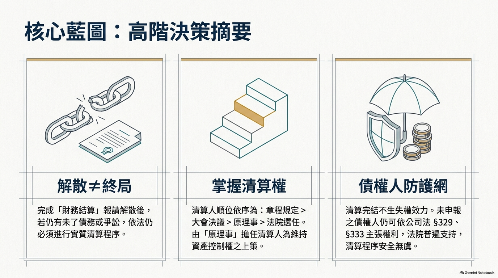
最高法院64年台上字第2461號判例
非法人團體須具備：多數人組成、一定組織、名稱及事務所、一定目的及獨立財產，並具繼續性質。
雲林地院102年度訴字第460號裁定
重劃會「核屬於非法人之團體」，解散後不具當事人能力。
9/28
臺南地院107年度訴字第1326號判決
重劃會「核屬非法人之團體，依法具有當事人能力」；於實體法上非權利義務歸屬主體，法律行為效力歸屬於全體會員。
法律效果
法人清算規定不能直接適用；解散後如有賸餘財產或未了事務，實務多類推適用其法理，由理事擔任清算人或由法院選任清算人。
10/28
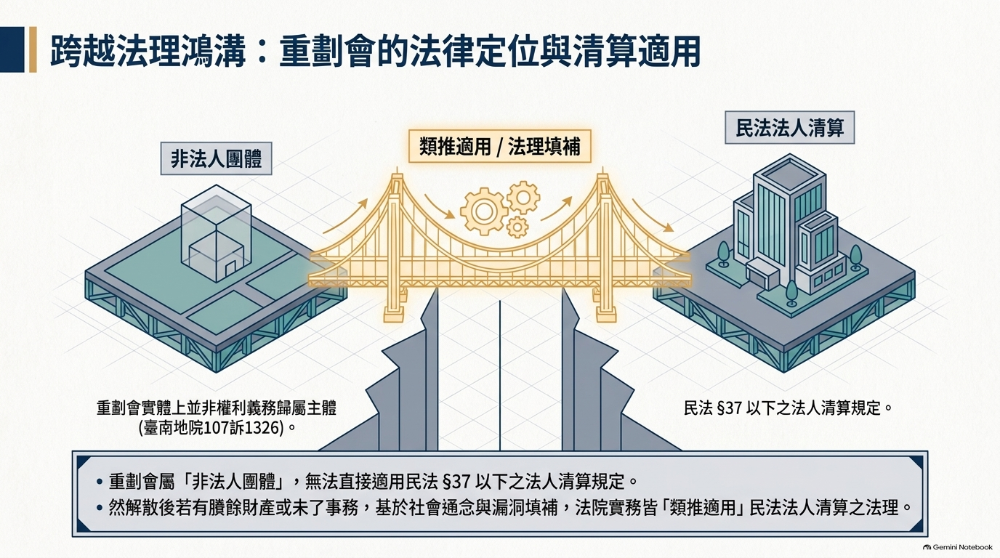
平均地權條例§58
得獎勵土地所有權人自行組織重劃會辦理市地重劃；組織、職權等辦法由中央主管機關定之。
獎勵辦法§3
自辦市地重劃應組織重劃會，以區內全體土地所有權人為會員。
11/28
獎勵辦法§6
主要程序第15-17款：財務結算→撰寫重劃報告→報請解散重劃會。
獎勵辦法§19
重劃會應於完成財務結算後，檢附重劃報告，送請主管機關備查，並報請解散。
獎勵辦法§18
違反法令或廢弛重劃業務者，主管機關必要時得解散之。
12/28
民法§37、§38
§37：法人解散後，由董事為清算；章程或總會另有規定者從其規定。
§38：不能定清算人時，法院得因主管機關、檢察官或利害關係人聲請選任之。
民法§40、非訟§59、§61
§40：清算人職務為了結現務、收取債權、清償債務、移交賸餘財產。
非訟§61：利害關係人得聲請選任清算人並應釋明利害關係。
13/28
合作社法§60
合作社解散後，清算人除章程別有規定或社員大會另行選任外，以理事充任之；不能選定時，法院得因利害關係人聲請選派。
都市更新會設立管理及解散辦法§34
解散之都市更新會應行清算；清算以理事為清算人，章程另有訂定或會員大會另選者不在此限。
14/28
制度設計
獎勵辦法§6、§19將「財務結算」列為報請解散之前提；其內涵（抵費地出售價款優先償還重劃費用、差額地價結算與發放、收支表編製，參市地重劃實施辦法§54-57）實質上已涵蓋清算主要內容。
結論
正常完成財務結算並經主管機關同意解散之重劃會，原則上已無再行清算之必要。
15/28
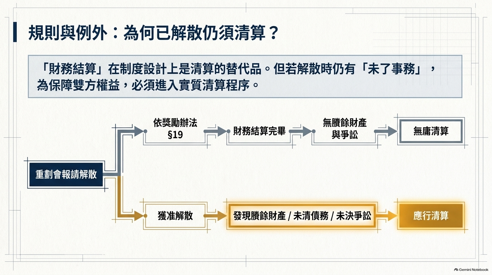
臺中地院114年度聲字第81號（臨時管理人—駁回）
理事會權責事項（獎勵辦法§14）須理事4/3出席、3/2同意決議，「顯無從由臨時管理人代行其職權」。惟係臨時管理人而非清算人，不當然阻礙清算人選任。
士林地院108年度抗字第6號（都更會類比）
「解散之都市更新會應行清算；清算以理事為清算人」，清算人並應向法院聲報。重劃會就「解散後了結未了事務」之需求與都更會相同。
16/28
臨時管理人（114聲81反面見解之射程）
代行理事會「繼續經營重劃業務」之合議決策權責（研擬重劃計畫書、工程發包、土地分配等）——法院不宜以外部人取代。
清算人（本案聲請對象）
職務：了結現務、收取債權、清償債務、移交賸餘財產（民法§40）——並非繼續執行重劃業務，性質上係終局處理解散後之未了事務。
17/28
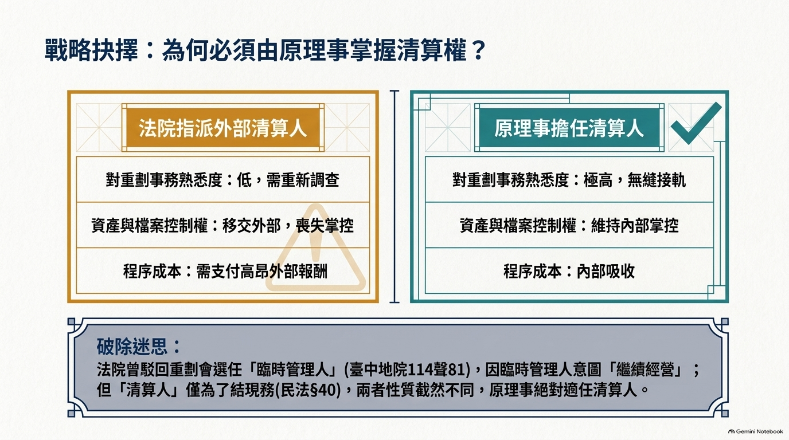
① 章程特別規定（本案章程無規定）
② 會員大會另選
③ 理事擔任清算人（類推民法§37等法理）
④ 法院選任（類推民法§38、非訟§61）
18/28
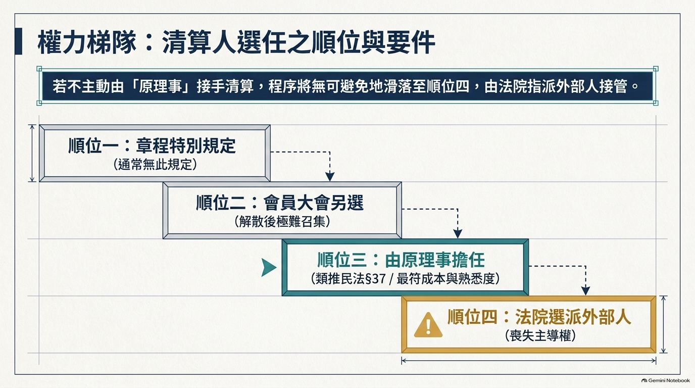
(一) 章程有無清算規定
章程17條無清算人規定，查無相關會議紀錄
(二) 是否已解散、清算
已於早年經主管機關同意解散；尚未進行清算
(三) 有無選任必要
仍有未了事務→有清算必要；原理事應可擔任
19/28
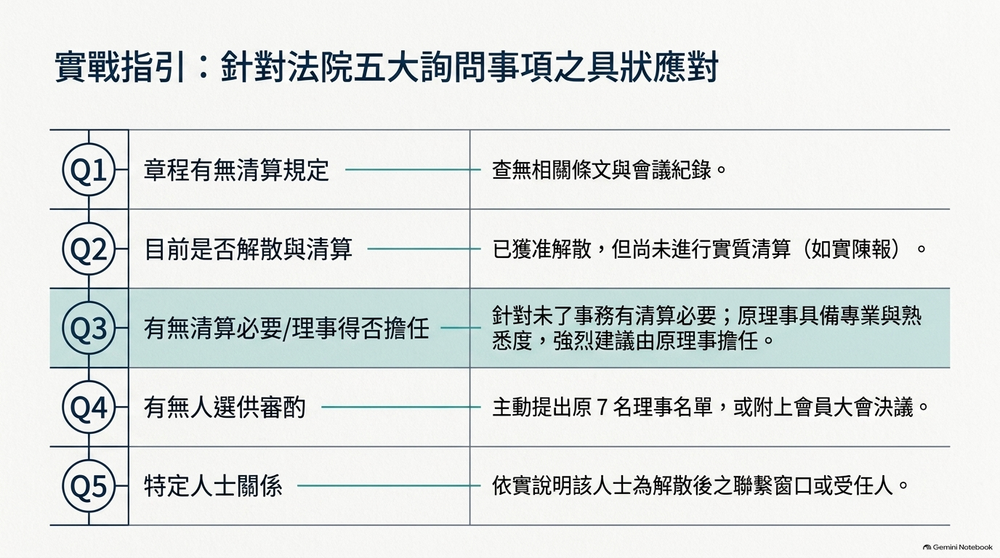
(四) 有無相關人選
得提出原理事名單（7名）供法院審酌
(五) 特定人士與重劃會關係
依主管機關函為解散後聯繫窗口；具體關係由當事人確認後陳報
風險提示
若拒不配合清算，法院可能逕依聲請選任清算人，剩餘資產恐脫離原理事掌控。建議積極配合、主動提名人選，掌握清算主導權。
20/28
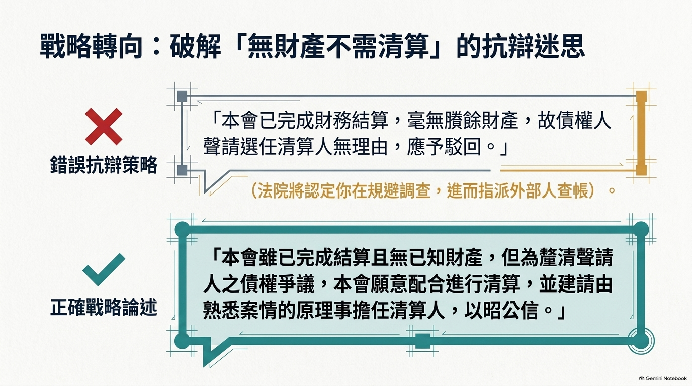
公司法§329
不列入清算內之債權人，就公司未分派之賸餘財產，有清償請求權；已分派且已領取者不在此限。
公司法§333
清算完結後，如有可以分派之財產，法院因利害關係人之聲請，得選派清算人重行分派。
21/28
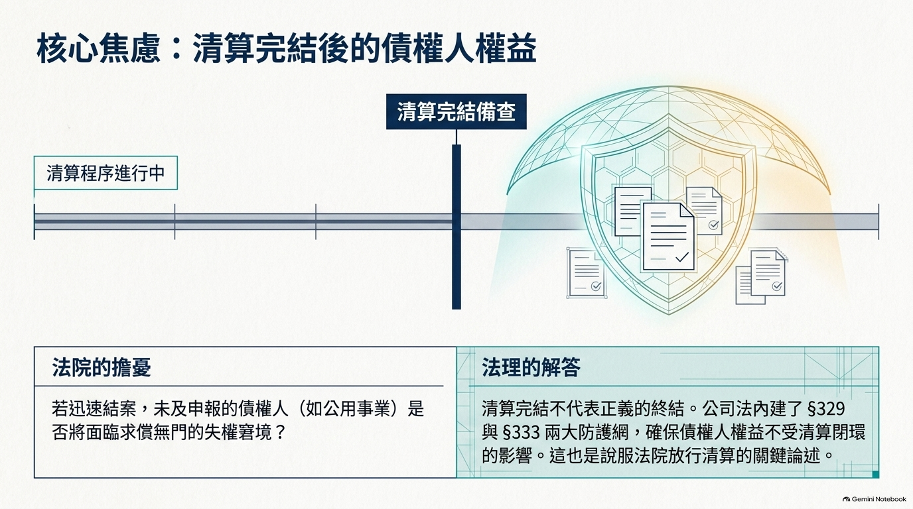
臺北地院97司382
債權人1千萬元債權；發現礦場補償金債權373萬餘元
准許
臺中地院100聲41
發現破產債權109萬餘元可供分配
准許
臺北地院102司187
國稅局退稅款支票需另選清算人具領
准許
22/28
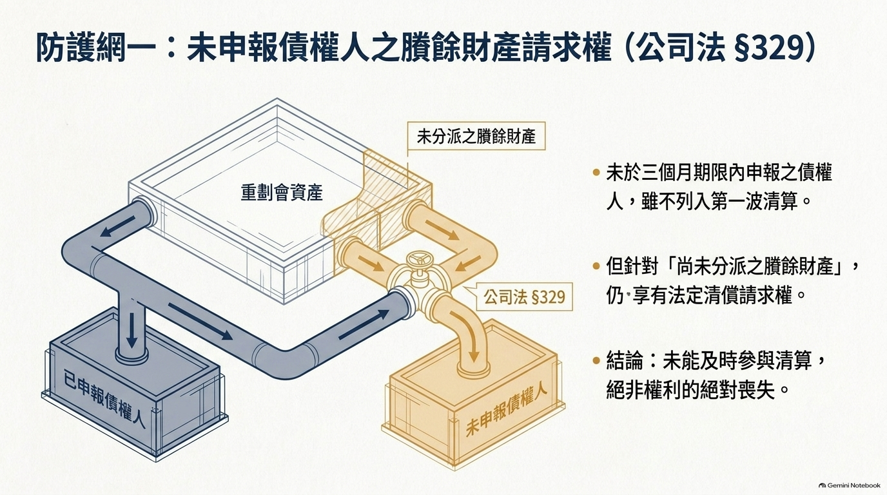
臺北地院104司68
發現銀行存款281萬餘元未列清算財產
准許
臺北地院105司192
發現持有第三人股份及股利291萬餘元
准許
高雄103司36／基隆100司21
清算完結後始取得工程款／房屋尾款債權
准許
要旨：清算完結後發現可分派財產，利害關係人仍得聲請選派清算人重行分派。
23/28
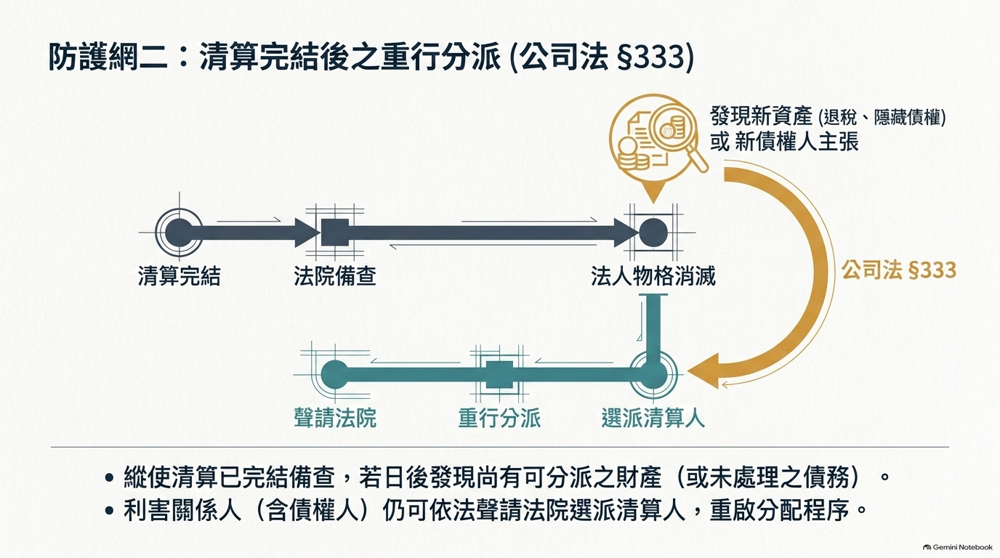
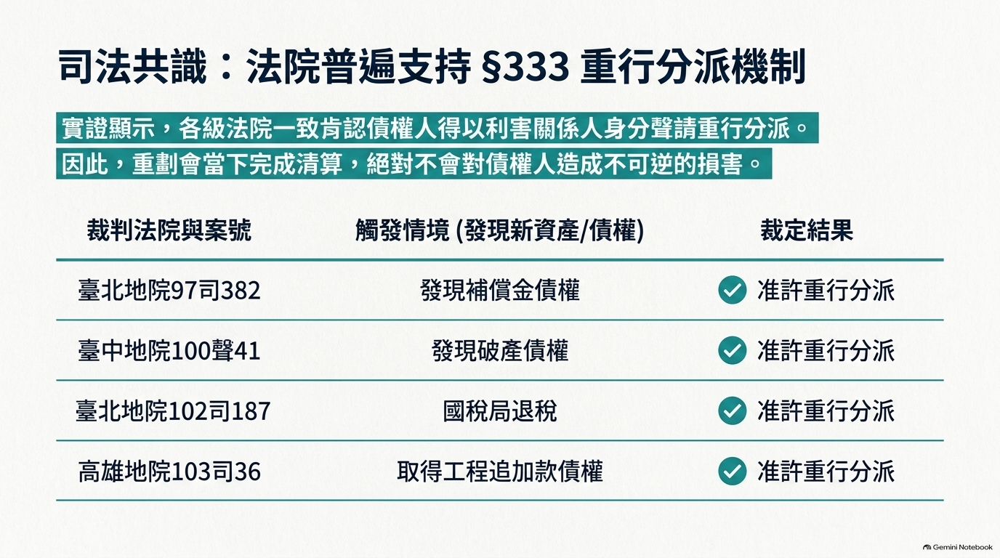
法律要件
民法§38、非訟§61之選任要件＝不能依§37定清算人＋利害關係人聲請並釋明——並未以「有賸餘財產」為要件。
實務肯認
臺南地院97年度聲字第587號：稅捐機關以合作社欠地價稅149萬餘元聲請選派清算人，法院未以「無賸餘財產」駁回，逕行選派律師為清算人。
24/28
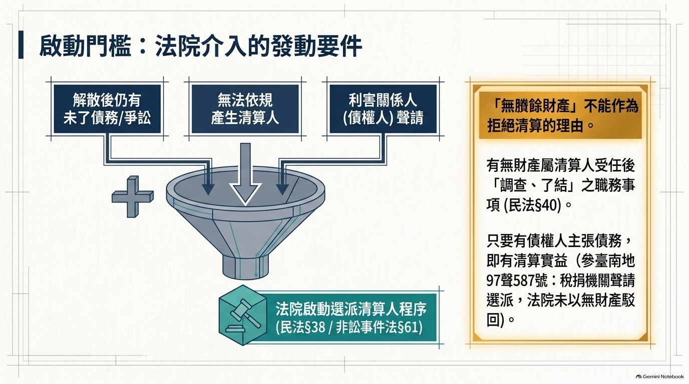
結論
市地重劃會解散後：正常完成財務結算者原則上無庸再清算；但有未了事務（賸餘財產、未清債務、未決爭訟）者應行清算，清算人以原理事充任為原則，不能定清算人時法院得因利害關係人聲請選任。債權人權益於賸餘財產範圍內不因清算完結而喪失（公司法§329、§333）。
26/28
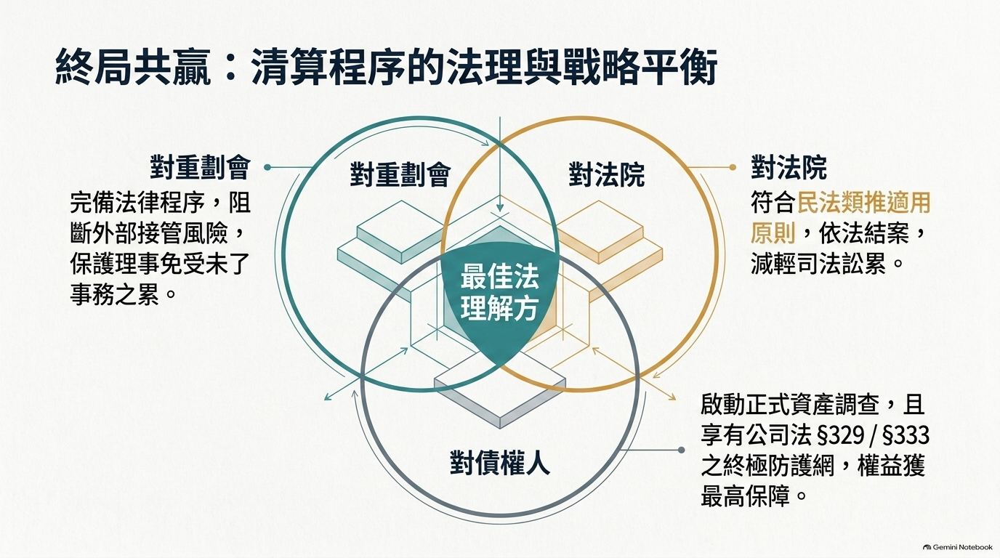
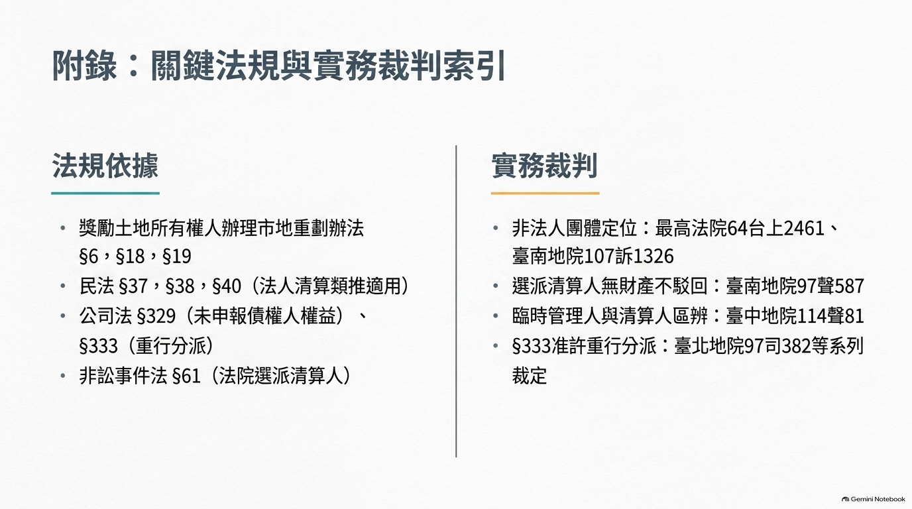